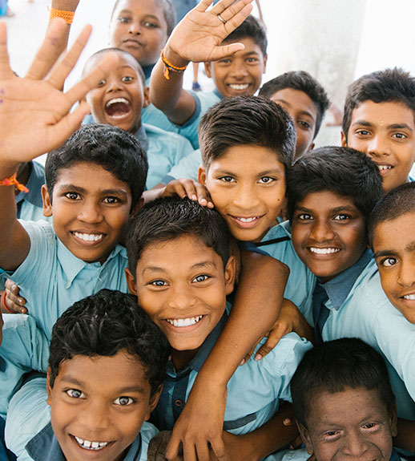
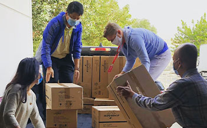
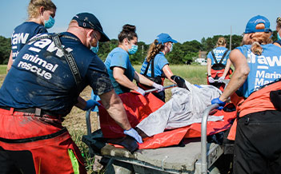

상생/나눔경영
GS E&R은 장학사업과 환경보전사업, 소외계층 지원사업 등을지속적으로 실시하며, 모두가 행복한 지역사회를 위해 노력하고 있습니다.
GS E&R 봉사단
집단에너지사업장 인근 지역 사회를 중심으로
교육, 장학 사업, 사회복지 사업을 지속적으로 전개

교육, 장학 사업, 사회복지 사업을 지속적으로 전개
초, 중, 고교에 교육시설 및 교육기자재를 기증하고, 성적우수자 및 소년 소녀가장에 장학금을 지급하여 지역사회에 우수인재를 육성하는데 공헌하고자 합니다.
활동분야
-
장애인종합복지관 특수차량 기증
-

산업단지 가꾸기
-

벽화그리기 봉사
사회공헌활동 연혁 및 수상내역
- 2017
-
-
9.13
안산희망재단 기부금 기탁
-
9.13
- 2015
-
-
(주)GS영양풍력발전, 지역인재양성 장학금 수여
11.02 -
반월발전소, 전력설비 안정성 산업통상자원부장관상 수상
6.30 -
반월발전소, 환통법 개선방안 환경부장관상 수상
2.02
-
- 2013
-
-
4.26
반월발전소, 환경관리 모법업체 선정
-
2.09
반월발전소, 자원순환 선도기업대상 환경부장관 표창 수상
-
4.26
- 2012
-
-
12월경상북도 / 자원봉사 우수 / 자원봉사 활동 우수
6.29
-
- 2010
-
-
12.12
경상북도 도지사 표창/사회 취약 계층을 위한 후원사업 우수
-
12.12
- 2009
-
-
초지종합사회복지관 자원봉사활동 감사장 수상
6.03 -
구미상공회의소 선정 환경관리부문 경북도지사 표창
3.29 -
구미시 자원봉사활동부문 유공표창
1.02
-
- 2008
-
-
6.21
구미시 상반기 시정유공 표창
-
6.21
- 2006
-
-
경북장애인체육대회 지원우수단체 표창식 경북도지사 유공표창
9.14 -
구미시 사회복지인대회 시장표창
8.20 -
구미시 자원봉사자대회 프로그램 부문 대상 및 유공표창
5.22
-
- 2005
-
-
12.08
19회 경북중증장애인 송년위안행사 경북도지사 표창
-
12.08
- 2004
-
-
제 7회 자원봉사자대회 프로그램부문 수상
6.21 -
자원봉사단 조직, 농촌 자매결연
4.04
-
- 2003
-
-
9.26
사회복지의 날 기념 경상북도 사회복지대회 보건복지부장관 표창
-
8.09
“환경경영” 선포
-
4.24
환경재단 “만분클럽” 가입
-
9.26